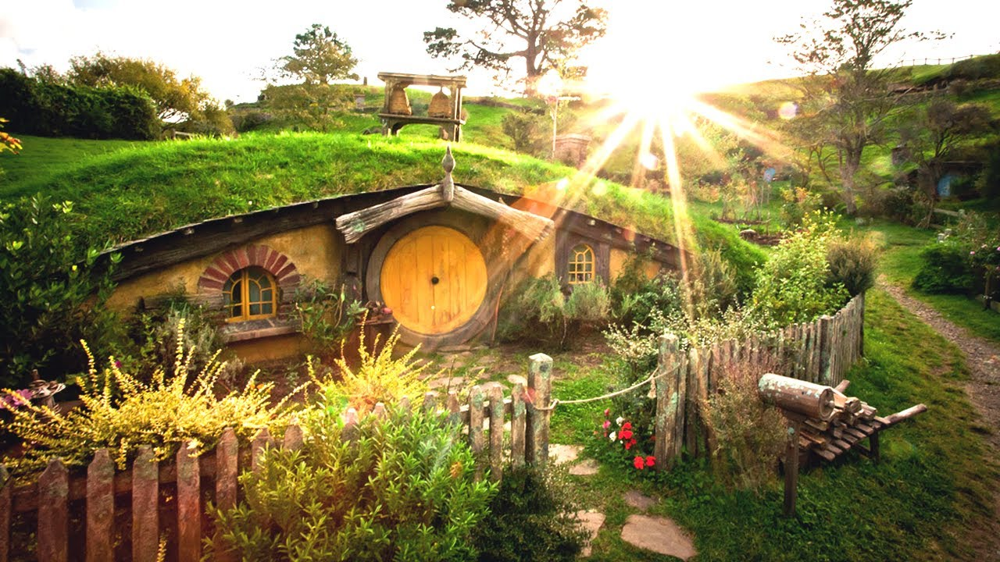

Her ser man Gandalf på vej ind Herredet, som er området, hvor Hobitterne lever - Bilbo Sækker.
Det er her Gandalf møder Frodo for første gang, før eventyret med ringen bliver sat i gang.
Her tager de afsted mod nye eventyr. Dog har de Sam med sig til at hjælpe Frodo med destuere ringen.